@jako.frames · behind the commercial
A 27-second 3D ad: an empty, sunlit library where a Claude pen plans, sketches, ticks the content plan and signs the whiteboard on its own. I never opened Blender. I wrote what I wanted in plain words and sent references; Claude Code built the room, animated everything to the beat of my song, rendered it and mixed the sound. Here is the whole process: every reference, every prompt, and what I changed between versions.
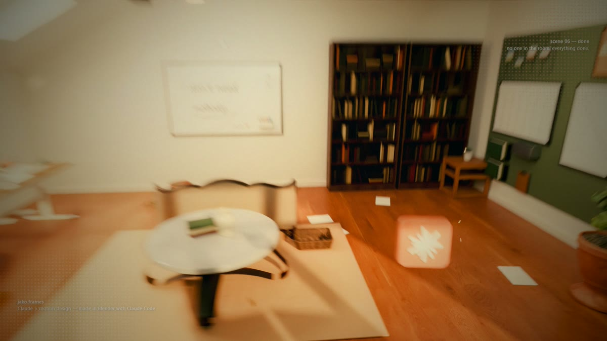
Blender ran in the background from Python scripts that Claude wrote. Each version took one message of notes from me. Three versions: v1 (vertical, EEVEE), v2 (horizontal, library room, action camera), v3 (Cycles, natural light, outro).
Claude does all of it by itself, so the room is empty. No person, no hands. A pen is the main character: it flies from desk to desk, draws, ticks, writes and finally drops back onto the to-do list. Everything else (camera, effects, sound) serves that one idea.
Make a 25-30 second 3D commercial for Claude. No people in it - the idea is that Claude plans, writes and builds everything by itself.
Start: a to-do list on a desk ("TO-DO LIST" header, Claude logo + "Claude" at the bottom, Instagram-growth tasks).
A greenish pen lies on the notebook.
Intro: on every hit of the song the camera snaps closer and the pen hops.
At the pause in the song, stretch the pause: the pen floats up and everything on the desk floats with it in zero gravity, with a wind whoosh.
On the drop the pen flies off - extreme, with wind trails, and loose papers blow away behind it.
It flies to a second desk and draws a plan, then to a wall board (content plan) and ticks it, then to a whiteboard and writes "jako.frames" with a signature.
On the way home it taps a 3D Claude icon - slow motion, focus on the icon.
It drops back onto the notebook and bounces once.
Last shot: a wide view of the whole room through the pen, showing everything it wrote.
Look: realistic, sunlight through the window, warm yellow/green/orange light, haze and smoke.
Camera: never static, smooth moves, speed ramps (fast in, slow out).
Sound: strong SFX, especially whooshes and things falling; duck the music in the slow parts.
Use the reference video for camera moves and effects only - don't copy it.
Use my room photos for the set.
Three kinds of reference, each for one job. Motion reference = how the camera moves and how effects hit. Room photos = what the set looks like. Close-up references = how one specific shot should be framed.
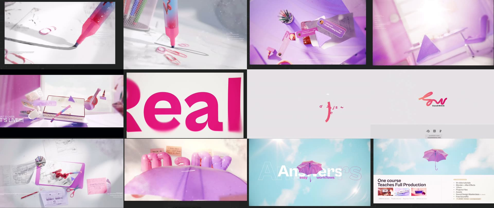
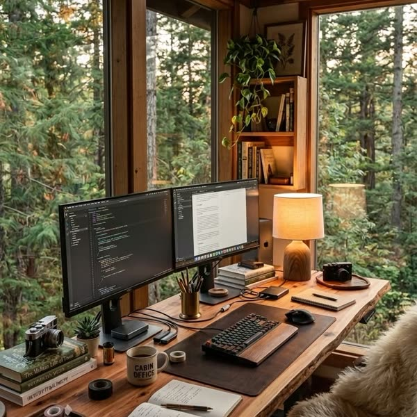
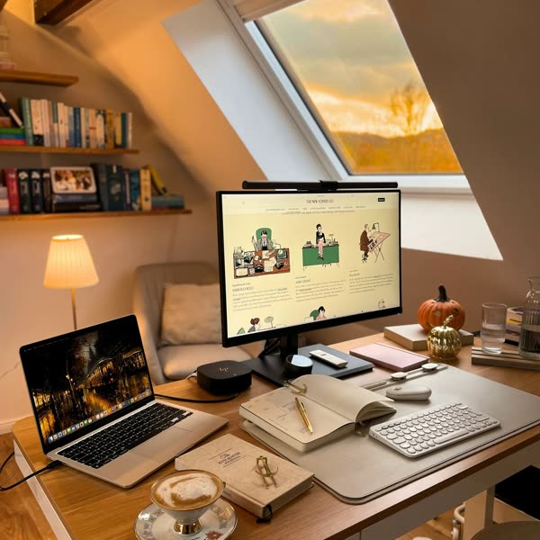
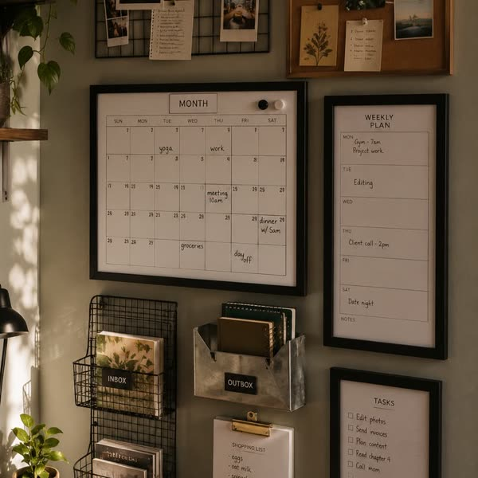
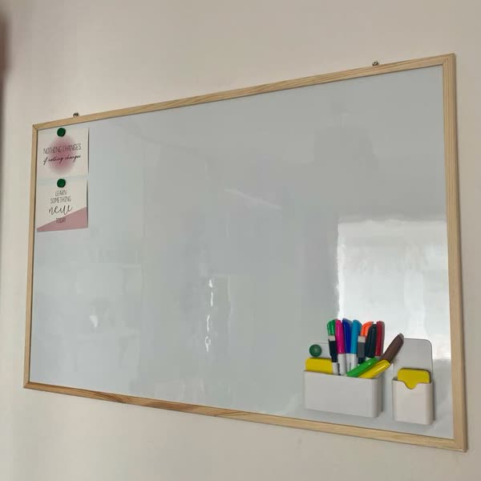
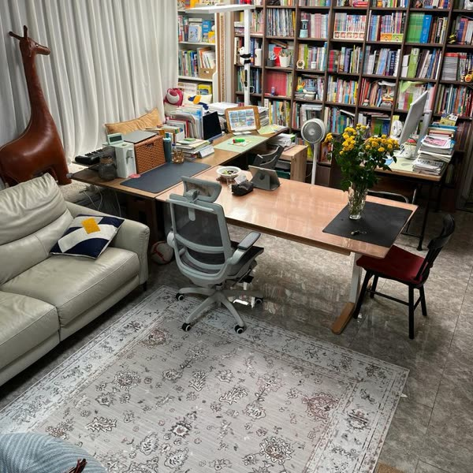
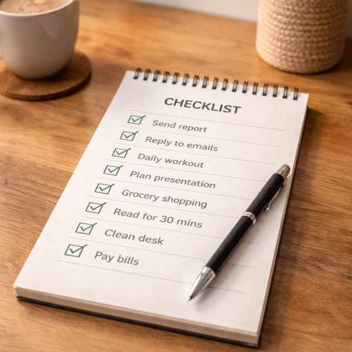
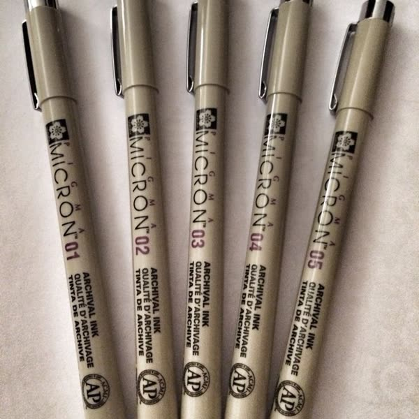
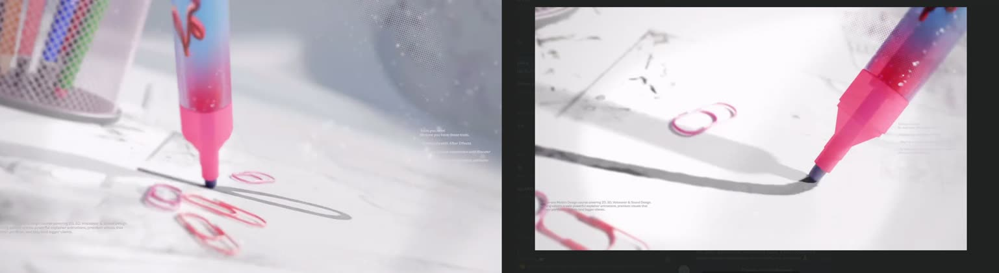
Flash reference: instagram.com/reel/DebYftXzzN9 (1-3 frame colour flashes, glitch bars and brush slashes on the beat).
Say what each reference is for. "Use this video for camera and effects only, use these photos for the room" stopped Claude from copying the pink colours of the motion reference into my room.
Claude analysed the song first (110 BPM, one beat = 0.545 s) and found every hit, the pause and the drop. Every move in the video is pinned to a time in this map, so the edit feels musical without a single keyframe placed by hand.
| Time | What happens |
|---|---|
| 0.18 – 2.31 | Five intro hits: camera snaps closer, the pen hops, a big word flashes: plan. sketch. write. post. repeat. |
| 2.88 – 4.97 | The song's pause, stretched +1 s: black bars close like half-shut eyes, the pen rises, desk props and phone notifications float. |
| 4.97 | Drop: bars snap open, paint flash, speed lines, the pen launches. |
| 6.6 – 8.2 | Desk B: the pen sketches a two-frame storyboard while the camera orbits. |
| 10.0 – 11.4 | Content plan: seven quick ticks in a macro shot. |
| 13.2 – 17.0 | Whiteboard: "i don't need / nobody." + "— Claude", shown with match cuts, then a zoom out to read it. |
| 18.06 | The pen taps the Claude icon: slow motion, focus racks to the icon, music ducks. |
| 19.7 – 21.5 | The pen drops onto the notebook; all tasks tick themselves; the camera rises to the whole room. |
| 21.5 – 27.2 | A page flies into the lens and becomes the end card, popping on the quiet hits: Claude + Blender, "Claude Code + Blender", jako.frames, comment "frame". |
Analyse this song before building anything: BPM, every hit in the intro, the pause, the drop, the bars after it, and any quiet break near the end. Give me a table of times. Then write a shot plan where every camera move, flight, tick and flash lands on one of those times. Stretch the pause by about 1 second. Cut the song so the end card lands on the quiet break.
One room, four zones from my photos: the live-edge desk under forest windows, the attic desk under a skylight, the wall organiser and the whiteboard. Furniture, books, plants and lamps come from Poly Haven (free, CC0); bookshelves and books are generated so the room feels like a real library.
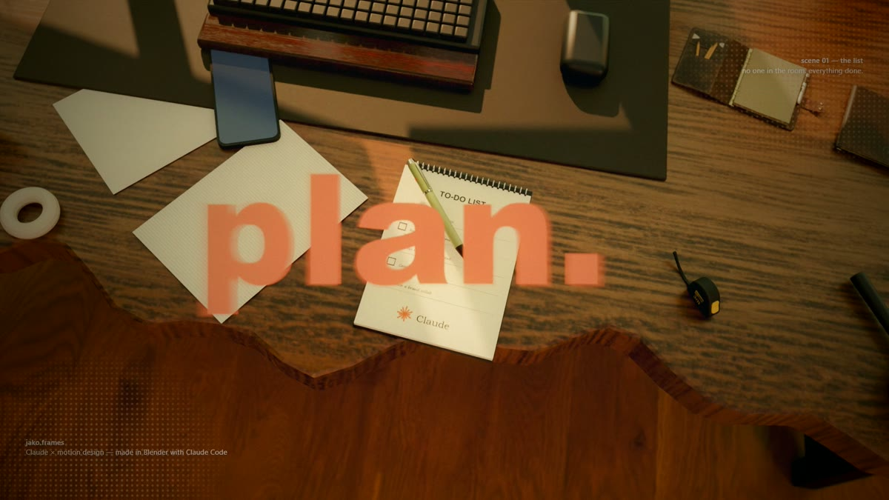
Build one realistic room in Blender from my photos, a home library: - Desk A: live-edge wooden desk under big forest windows, two monitors, books, camera, mug, lamp, plants. - Desk B: light oak desk under a slanted skylight (sunset light), laptop, monitor, planner, coffee cup, pumpkins. - West wall: sage-green organiser with a month calendar, a CONTENT PLAN frame, cork board, tasks frame. - South wall: whiteboard with a marker holder. - Bookshelves full of books on every wall, a sofa, a round coffee table, ceiling lamps, a ladder, floor plants. The room must not look minimal - fill it like the reference photo. Use free Poly Haven models and textures. Sunlight through the windows; everything else in natural colours. Show me test views of each zone before animating.
My first room was too empty and everything was orange. "Make it a library like the photo" and "only the sunlight is warm, everything else natural colours" fixed both in one round.
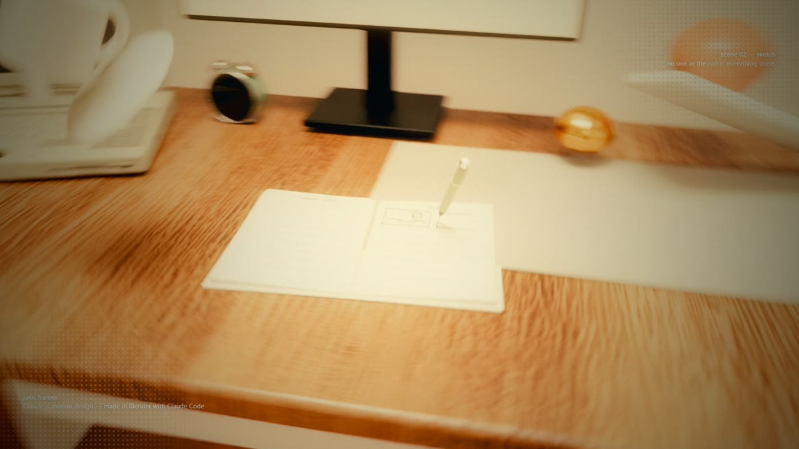
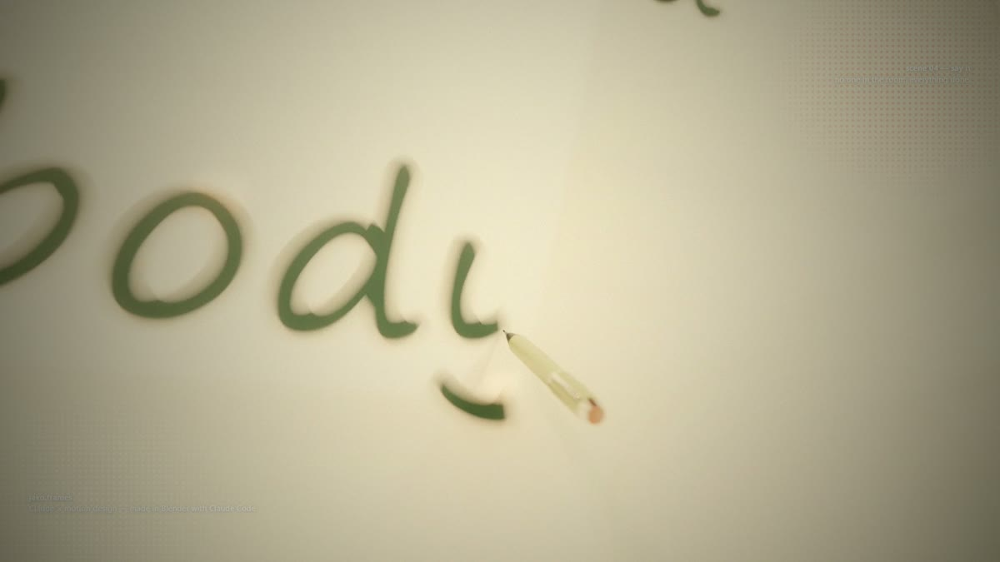
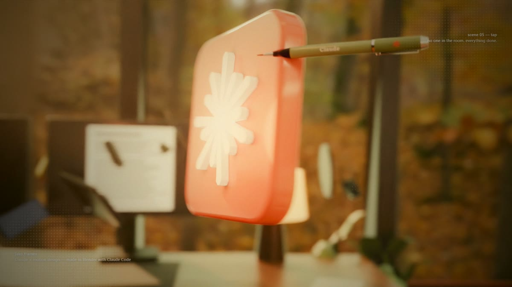
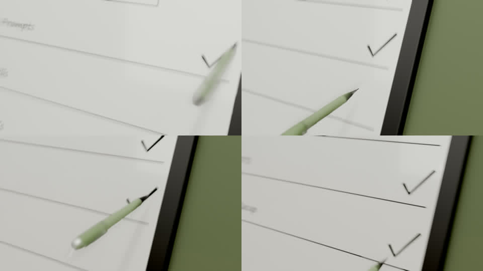
Make it horizontal 16:9. Don't keep the camera locked on the pen. Move it around the action like an action camera, with a smooth flow, so the room is always visible. When the pen writes, don't move the camera fast - orbit slowly. Flights are too fast - slow them down so you can see them. At 5-6 s the camera goes behind the monitor - never let it go behind objects. Less blur: focus is only on the pen right now, I want to see the room. When the pen rises in the pause, close black bars from top and bottom like half-closed eyes. Content plan: no long writing. The pen quickly puts a tick on every row, in the same time as now, shot like this macro photo.
Always a cheap preview first (EEVEE, low resolution, with sound). I only approved the long render after the third animatic.
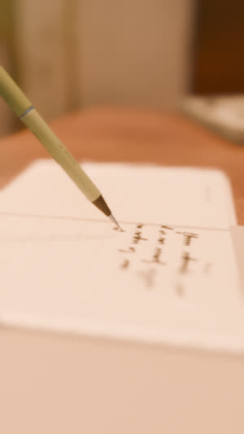
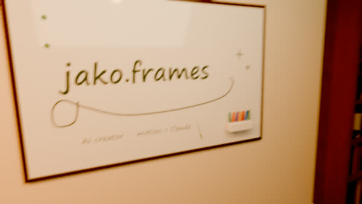
The final render is Cycles (realistic light) with "posterize time": every second frame is rendered and held, a 15 fps stepped look that also halves the render time. On top: a warm golden-hour grade, soft bloom, grain, light sweeps, halftone corners and paint flashes locked to the beat.
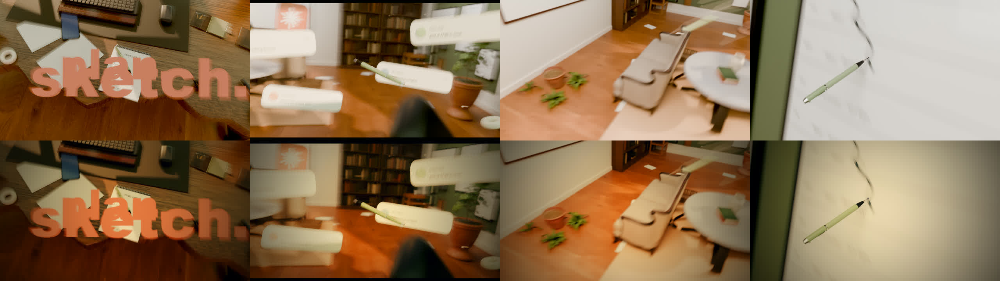
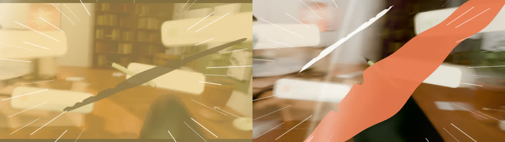
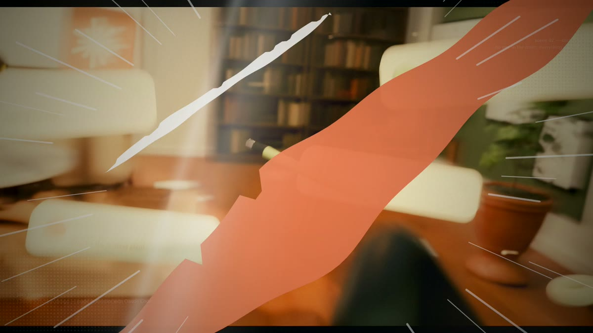
Render with Cycles instead of EEVEE so it looks real. Don't make everything yellow: only the sunlight is warm, other things keep their real colours. Add posterize time to the whole video. Colour and light like my reference photos: warm and cozy, but not too dark. Add light sweeps on the big moments, halftone dots in the corners, and white flashes on the rhythm. Then change the flashes to paint flashes like this reel: 1-3 frame colour flashes, glitch bars and brush slashes on the beat. Do the effects as a separate layer on top, so the long render doesn't have to restart.
Effects and colour live in a separate layer added at the end. I changed the flash style and the grade twice while the 7-hour render kept running, without re-rendering anything.
The song is cut on bars: the pause is stretched, and the middle is shortened so the end card pops on the song's quiet hits. SFX are tied to the same events as the animation: pen taps, wind, whooshes, ticks, marker and pen scribbles, paper rustle, things falling back on the desks, a glass ting on the icon.
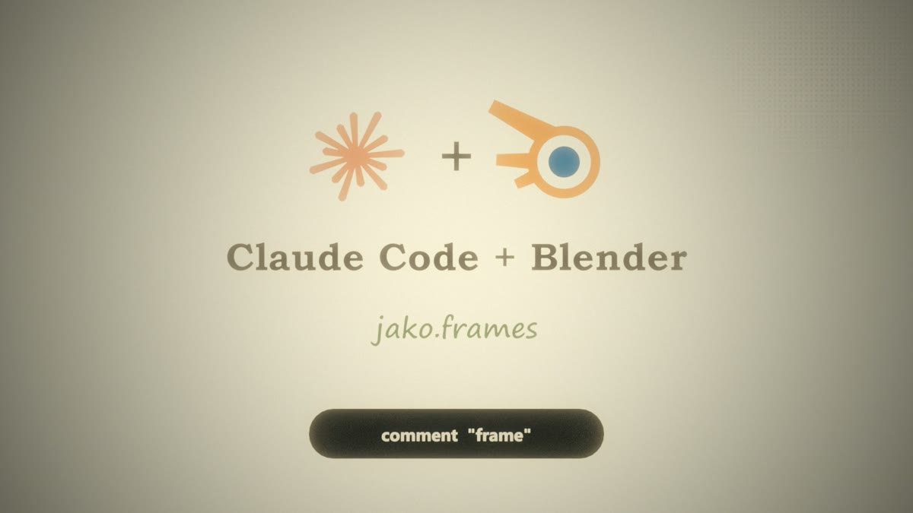
Shorten the last room shot. For the outro, make a 3D to 2D transition: a page flies up into the camera and becomes the screen. On it: the Claude Code and Blender logos with a nice design, "Claude Code + Blender", then jako.frames, and at the very bottom: comment "frame". Pop each line on the hits of the quiet part of the song.